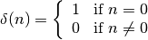
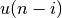

FIR¶
Introduction¶
FIR systems are commonly used for digital signal processing. They can do signal filtration when used as filters or discrete convolution. Also they are used for reverberation.
As name says FIR system has impulse response of finite durations. That means if we drive discrete delta impulse at FIR input its respons will setls down to zero in finite time. Discrete delta impuls can be written as:

Mathematical record of finite respons on delta impulse should looks like:

where bn represents impulse response in particular time step n, and M is response length. Output equation of FIR systems can be written as:

Having all that in mind one possible implementation of system with output equation like 3 is shown in figure 1.
Translation of building blocks in figure 1 to digital hardware is straightforward. Just replace adding block with adder, gain block with multiplier, and delay block (E-1) with register. One possible implementation could be to copy block diagrame directly to some HDL code but that would not be general enough. We suggest another one shown in figure 2. As we can see, there is a memory storage for coefficients, and multiply accumulate unit that do summation from equation 3. Data from input named coefficients is loaded to memory before computating 3. After loading surrounding hardware should start streaming data samples through samples interface. Connection from samples bus to coef memory is here just to indicate that we need mechanism to synchronize input samples with appropriate coefficient from memory. Later we will show how to do that efficiently using PyGears.
Let’s go back to the figure 1. Beside it will be slow in terms of frequency because of long combinational path, it will not be optimal regarding silicon needed for implementation. It will use M+1 multipliers and M adders. Because of that, we implement hardware that calculate FIR output sequentially. First, delay registers were removed outside the hardware block assuming that some other component will drive input sequence correctly. That means that current input sample and delayed ones will be driven as stream. If we look at equation 3 this stream is represented by  part which sould be multiplied with appropriate coefficient bi. Because FIR coefficient will be used over and over again a decision is made to store coefficient in memory module inside the hardware. Another reason for such implementation is caused by idea to make hardware reusable for more general mathematical operation behind the equation 3 called convolution because order of samples could vary.
FIR API¶
Function named fir represent whole design. It has two inputs, one for coefficients and other for samples. Beside inputs it has two parameters, shamt and coefficient depth. Its output is queue of integers with same width as input samples.
def fir(coefs,
samples,
*,
shamt=15,
coefficient depth=2048):
Coefs type is queue of integers. As name says this input serves to receive all coefficients of FIR system.
Samples input is also queue of integers but it is second order queue. This means that samples are treated as queue of queues where inner queue correspond to one window needed for calculation of one output sample. For example, in audio filtration this window of samples represents current sample plus filter order number of previous samples. In 2D convolution in CNNs this window is actually part of input feature map which has shape same as kernel (FIR coefficients). Outer queue correspond to end of input sequence. In audio filtration that can be end of song, while in 2D convolution that is end of input feature map.
Shamt parameter is shift amount for resulting output. This is necessary if we want to keep nunmber format same after FIR processing. Number is extended because of multiplication opperation.
Coefficient depth correspond to coefficient memory depth. As an example, in audio filtration this number represent max filter order that hardware support.
Hardware Description¶
Coefficient memory is implemented as simple dual port RAM memory, with same capabilities as matching Xilinx SDP memory. SDP funtion interface is listed in next code fragment.
TWrDin = Tuple[Uint['w_addr'], 'w_data']
TRdDin = Uint['w_addr']
def sdp(wr_addr_data_if: TWrDin,
rd_addr_if: TRdDin,
*,
w_data=b'w_data',
w_addr=b'w_addr',
depth=5) -> b'w_data':
pass
Interesting parameters for our application are write port, read port and depth. Write port is of type Tuple(address, data) while read port is just address.
Because coefficients interface does not contain address, hardware will create address internally. In this application address values have regular increasing order from 0 to coefficient num. For address we use module named qcnt. This module receive coefficient form input and counts it. At the output it serves number that correspond to coefficient possition in input queue which is equal to address in local memory. Because qcnt output is queue of all this addresses (for example, if filter has 3 coefficient output of qcnt will looks like [0, 1, 2]) and sdp expects just Tuple(address, data) we needed to cast queue to data which is done by project module. Project takes queue at its input and reduce queue level (default reduction is 1 level). Now addresses are created and we need to project coefs input because its type is also queue and concatenate address with coefficient. Finally, we get input Tuple for write port of sdp. Code below is responsible for the described process.
write_address = coefs \
| qcnt \
| project
write_data = coefs | project(lvl=coefs.dtype.lvl)
write_port = ccat(write_address, write_data)
To execute FIR opperation we must multiply every sample from input window with corresponding coefficient and accumulate all these multiplication results. For next output sample process is repeated with new input sample. That means hardware should reuse coefficients again and again. What is important for us is that order of coefficient neede for multiplication is regular and starts from 0 to coefficient num. Practically speaking we need read address generator that create addresses starting from 0 to coefficient num. In order to realize this we must count coefficients and that would be done while writing coefficient to local memory. Modul named qlen cnt will receive coefficient on its input and counts queue length. At the end of queue it serves results which is stored in register. This is done in lines below.
coefs_num = coefs \
| qlen_cnt(cnt_lvl=0) \
| dreg
To start FIR opperation we need sequence of read addresses in regular order as mentioned. Additionally, we need this sequence for every output sample. Because sequence should be triggered at the beggining of new input window, samples input is passed to queuenvelope module which takes subqueue (one window) and produce one output for every input window. Its output will be only information about highest order queue state which will tell us if current window is last window or it isn’t. This information is not currently important but it is used to finaly consume information about coefficients num stored in dreg. At the end of input sequence, dreg result is pulled and FIR module is ready to receive new coefficients. Speaking at lower level of abstraction, ready signal is passed to dreg with last window in input sequence because of cart module nature. As mentioned queuenvelope output is brought to cartezian module (cart) which concatenates previously calculated coefs num with this trigger. That means that we will get one coefs num per every input window (subqueue). This information is needed for range generator that will interpret it as upper limit of counting. Range generator (rng) module receive command of type Tuple(start, end, increment). To prepare configuration we will concatenate constant zero (const(val=0)) as beggining, dot pruduct len which is upper limit calculated previously, and constant one for increment. This configuration is passed to rng which outputs read address sequence.
new_window = samples | quenvelope(lvl=1)
dot_product_len = cart(new_window, coefs_num) \
| project
Now, we have prepared read and write ports for memory so next line will create memory module and connect it.
coefficient_for_calc = sdp(write_port,
read_port,
depth=coefficient_depth)
Next, we need MAC modul which will take samples and coefficient, multiply them and accumulate. For this purpose we can use PyGears built in modules named add and mul. However, targeted Xilinx compiler is not capable of merging these two modules and mapping them to on chip DSP block. Because of that custom gear mac is created. It is written in pure SystemVerilog and can be found in utils/custom_gears/svlib/mac.sv. Here is wrapper function used to call this module.
TDin = Queue[Tuple[Int['w_data'], Int['w_data']]]
@gear
def mac(din: TDin) -> Int[b'2*w_data']:
pass
As it can be seen it receives two integers and produce output which has len is twice wider than input integers. Because input samples are second order queue and mac module receives queue we need to remove information of the highest order queue from mac input. For this purpose fmap can be used. In this particular application fmap is used as some kind of wrapper that allow us to use mac module for the input type for which it is not foreseen. That means fmap increase reusability of general modules. Of course we could implement mac module in that way that it can handle two input interfaces of different type (queue of coefficients, and second order queue for input samples) but that solution will create application specific mac module which has less chance to be reused in other application. Beside reusability, implemented mac was written with single responsibility idea on mind. That means, it is more natural that mac receives two queues, do multiply-add opperation and outputs result than to revceive second order queue, queue, do multiply-add opperation, handle different queues order and outputs results. In that case mac will have at least two different functions to do which will reduce reusability. Having all mentioned in mind, samples are piped into fmap and passed to mac wrap wrapper function without information about the highest level of queue. This is done by specifing lvl=1 parameter in fmap call. Beside passing samples, we pass shamt and coefficient for calc directly. As you can see in mac wrap function samples are concatenated with ceofficiens using czip module and passed to mac. Mac result is shifted by shamt and casted to samples data type (dtype[0] means only data type which is integer not queue). After doing multiply-add, result is returned and the highest level of samples queue is concatenated to it by fmap. Here is code that instantionate mac using wrapper function mac wrap.
@gear
def mac_wrap(shamt, coefs, samples):
conv_res = czip(samples, coefs) | mac
return (conv_res >> shamt | samples.dtype[0])
res = samples \
| fmap(
f=mac_wrap(shamt, coefficient_for_calc), fcat=czip, lvl=1) \
| Queue[samples.dtype[0]]
At the end of implementation process let’s have a look at the most interesting waveforms.
…